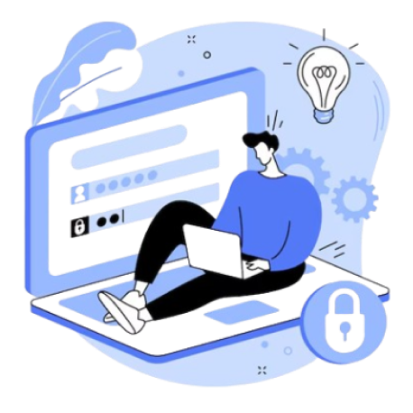

AMACIMIZ
İki kişilik bir ekibiz; biri backend, diğeri frontend işleriyle ilgileniyor. Amacımız, Türk gençlerine yazılımı kolayca öğretmeyi ve sanal ortamda güvenliğini sağlamayı hedefleyen "brilliantcamp" platformumuzu geliştirmek. Teknofest 2025'te eğitim teknolojileri alanında ödül kazanarak bu alanda daha iyi bir konuma gelmeyi amaçlıyoruz.
PROJELERİMİZ
Burdan projelerimizi inceleyip kullanabilirsiniz.
Proje1
Babapro metin Babapro metin Babapro metin
Proje2
Babapro metin Babapro metin Babapro metin
Proje3
Babapro metin Babapro metin Babapro metin
FAQ
Sıkça Sorulan Sorular
Neden böyle bir proje yaptınız? +
Bu projeyi, Türk gençlerine yazılım öğretmenin ve sanal ortamda güvenliği sağlamanın önemini vurgulamak için başlattık. Hedefimiz, gençlere modern eğitim yöntemleri sunarak onları bu alanda başarılı kılmak.
Ne kadar zorlandınız? +
Proje süreci bazı zorluklar içerdi. Ancak, ekip olarak bu zorlukların üstesinden gelmeyi başardık. Yazılım geliştirme süreci, çeşitli teknik ve organizasyonel zorlukları içeriyor, ama her adımda öğrendik ve büyüdük.
Ticari bir amacınız var mı? +
Projemizin ana hedefi ticari kazanç değil, eğitim ve güvenlik alanında katkıda bulunmaktır. Ancak, sürdürülebilirlik ve projenin devamlılığı için ticari fırsatları değerlendirmeyi planlıyoruz.
Gençlere tavsiyeleriniz var mı? +
Gençlere tavsiyemiz, sürekli öğrenmeye açık olmaları ve hedeflerine odaklanmalarıdır. Teknolojinin hızla değiştiği bu çağda, öğrenmeye devam etmek ve yeni fırsatları değerlendirmek önemlidir.